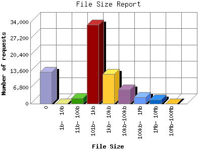

The File Size Report categorizes the size of the file being requested. This can be useful in optimizing site performance. (Remember that on a 28.8Kps modem, it will take on average of 40 seconds to download 100Kb of data.)

| File Size | Number of requests | Percentage of the bytes | |
|---|---|---|---|
| 1. | 0 | 13,226 | 0.00% |
| 2. | 1b- 10b | 3 | 0.00% |
| 3. | 11b- 100b | 2,229 | 0.00% |
| 4. | 101b- 1kb | 33,035 | 0.39% |
| 5. | 1kb- 10kb | 12,333 | 0.88% |
| 6. | 10kb-100kb | 5,892 | 2.71% |
| 7. | 100kb- 1Mb | 2,659 | 13.78% |
| 8. | 1Mb- 10Mb | 1,604 | 81.60% |
| 9. | 10Mb-100Mb | 4 | 0.64% |
This report was generated on February 10, 2008 02:18.
Report time frame December 13, 2001 10:35 to February 10, 2008 01:40.